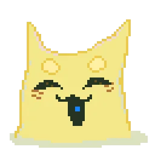

about me

julyMuff
ジュリマフは友利師狼に所属する一匹のキツネ。 キヨウな前あしを駆使して、twitterやHPつくりを がんばっている。 絵を投稿することはちょとニガテ。 モチモチのおもちがだいすき。。
inspired
影響を受けた作品

ジュリマフは友利師狼に所属する一匹のキツネ。 キヨウな前あしを駆使して、twitterやHPつくりを がんばっている。 絵を投稿することはちょとニガテ。 モチモチのおもちがだいすき。。
影響を受けた作品